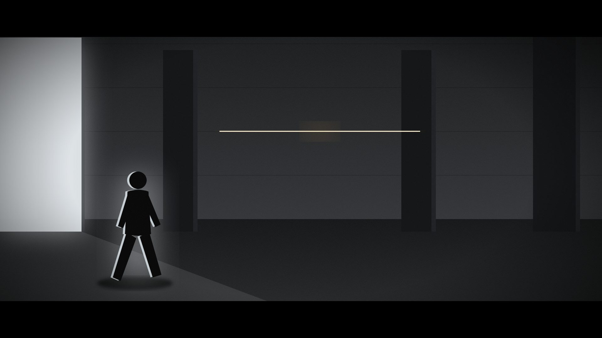
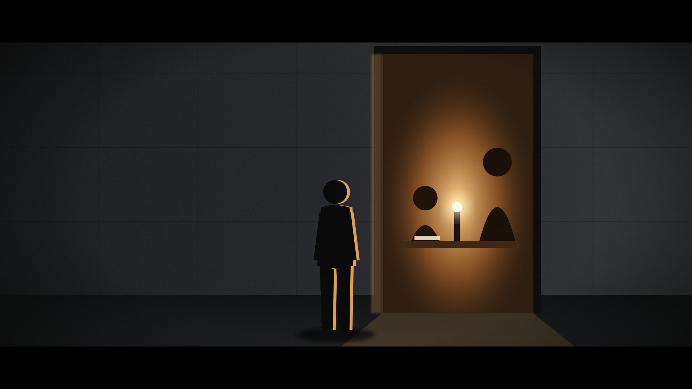
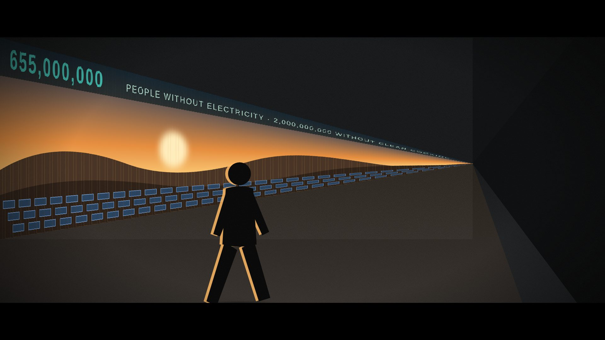
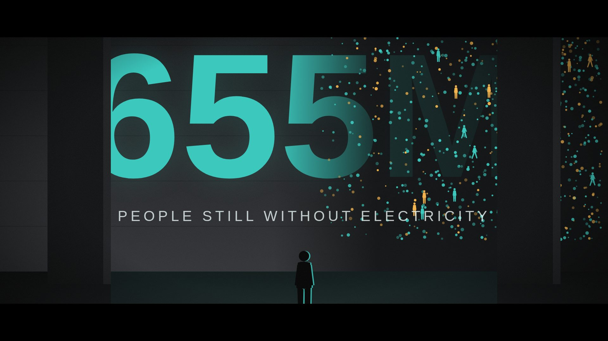
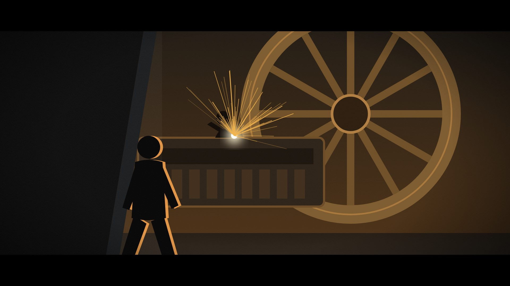
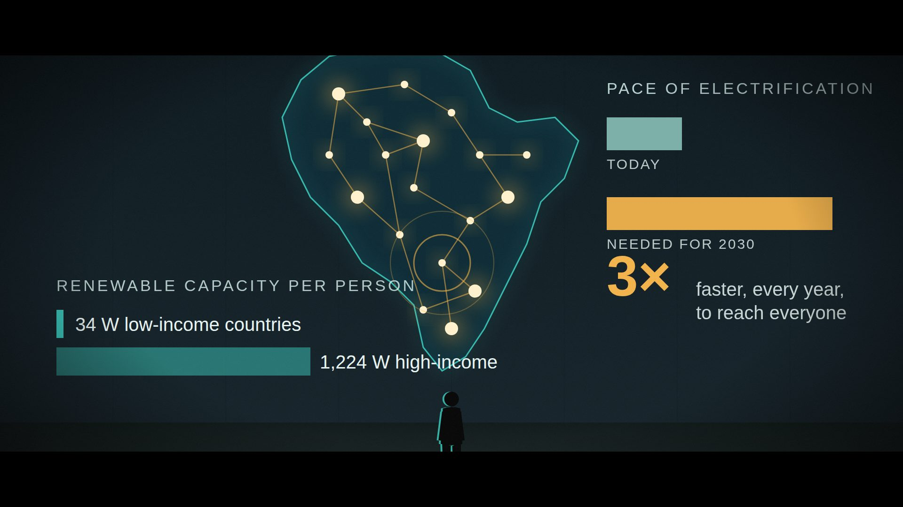
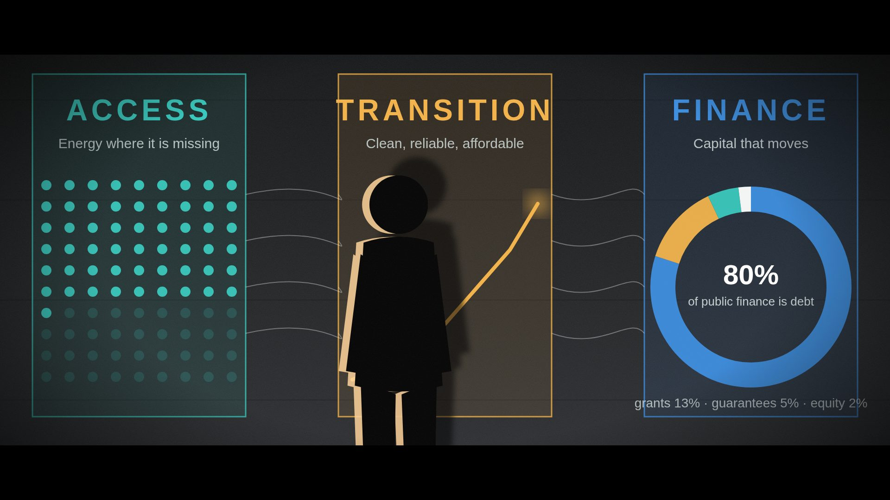
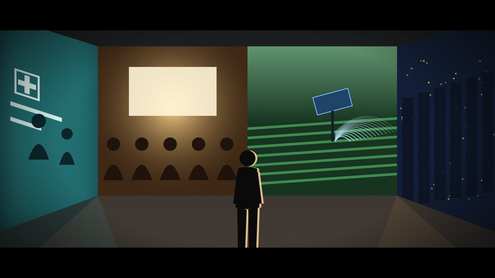

Film treatment & storyboard pitch · UNDP Sustainable Energy Hub








Development without energy is a building with the lights off. So we start there: bare concrete, no colour, one man walking. As he moves, the walls begin to show what reliable energy makes possible — first small (a doorway), then moving (a corridor), then monumental (a whole wall). The projections escalate in scale exactly as the narrative escalates from a single household to a continent-wide system, and the final room brings every scene together around him.
The building is the argument; Riad's passage through it is the sentence. The camera never cuts away from his walk — the film is one continuous passage, each scene revealed by turning a corner, so the audience discovers the story at the same pace he does.
A doorway at human size, then a landscape travelling along a corridor at walking pace, then a single image filling an entire wall. Every projection is anchored to real architecture — door frames, pillars, corners — so the image reads as light on concrete, never as a green-screen.
Live lines are recorded on location with the room's own acoustics: Riad at a doorway, turning a corner, speaking to camera. Studio lines are the close, intimate voice that carries the data sequences while the walls do the talking.
Four data moments are animated into the projections: a counter along the corridor, a wall-sized number dissolving into the people it counts, a map of Africa lighting up node by node, and the offer's three pillars with a finance mix that shifts as Riad speaks.
Paced at ~130 words per minute with room for ambient sound. Optional cut for a 90-second version: drop scene 4 and shorten scene 7 to its first two sentences.
Live · walking, off-mic distanceBefore we talk about energy — we need to start at development.
Riad enters frame-left from the flooded entrance, back to camera, and keeps walking. The camera holds, then begins to follow at his pace. Sound: footsteps, the hum of the building, wind at the door.
Wide and low. Riad is small against the pillars; the entrance light blows out behind him and rims his silhouette. The composition is almost empty on purpose — this is the "lights off" state of the building.
Nothing yet except one thin amber line at eye height on the far wall, like a horizon or a power line. It is the first sign that the building can "wake up". It should be barely noticed on first viewing.
None. The line is a seed: it will become the corridor ticker in scene 3.
Cinematic wide shot, 2.39:1, low angle. A man in a dark suit walks away from camera out of a blown-out white entrance into a vast dark brutalist concrete hall with square pillars. Only one thin horizontal line of warm amber projected light glows on the far concrete wall. Hard rim light on his silhouette from the doorway, deep shadows, fine film grain, volumetric haze, muted desaturated palette, Roger Deakins lighting, anamorphic lens, 35mm.
Live · standing at the threshold, quietA clinic that closes at sunset. Homework by kerosene. A vaccine fridge that can't hold cold. This is what the absence of energy looks like. It looks like a life on pause.
He stops at the door and watches. The scene inside is silent and slightly slowed. He does not enter; he speaks to us in profile, lit only by the warm spill.
Eye level, medium. Riad fills the left third; the doorway fills the right. Camera is perfectly still — the only movement is inside the door frame. Warm light on his face-side, the rest of the corridor near black.
A single household scene projected exactly into the door opening, at true human scale: a child doing homework, a mother behind her, one lamp — the only light source. Shot on location (a Solar for Health / home-solar community) so the people are real, not stock. Options for the "clinic at sunset" line: cross-fade to a nurse in a clinic doorway.
None. Deliberately human. The contrast with scene 3's data is the point.
Cinematic medium shot, 2.39:1, eye level. A man in a dark suit stands in profile at the threshold of a tall concrete doorway inside a dark brutalist building. Inside the doorway, projected onto the far wall at life size, a warmly lit scene: a young girl doing homework at a wooden table under a single small solar lamp, her mother standing behind her. The only light in the frame comes from the projection and spills onto the man's face and the concrete floor. Deep black shadows, rich amber and brown tones, fine grain, anamorphic bokeh, documentary realism.
Studio · close, measuredSix hundred and fifty-five million people still live without electricity. Two billion cook with fuels that harm them. Most of them in sub-Saharan Africa — and the gap is not closing fast enough.
Riad walks at a steady pace; the landscape on the wall moves with him so the horizon appears to stay level with his shoulder. Music enters here, low.
Steadicam or dolly tracking from three-quarters behind, keeping Riad in the left-centre and the wall as the right half of the frame, vanishing point far ahead. The corridor's length is the runway for the figure.
A long-format aerial/drone plate — sunrise over a Sahel landscape, a solar field, a village at the edge of a grid — mapped onto the corridor wall in perspective and scrolled at walking speed. The floor picks up an amber reflection.
A ticker runs along the top of the projection: a counter climbs to 655,000,000 over three seconds, then a second figure, 2,000,000,000 without clean cooking, slides in behind it. The digits are slightly ahead of Riad so he is always walking toward them.
Cinematic tracking shot from behind, 2.39:1. A man in a dark suit walks down a long dark concrete corridor with a strong one-point perspective. Onto the entire left wall a wide landscape is projected in perspective: sunrise over savannah with a field of solar panels and a distant village, warm orange sky. Above the landscape a thin band of teal digital text reads "655,000,000". The projection light reflects on the concrete floor. Deep contrast, film grain, anamorphic flare, muted teal and amber palette.
StudioBut a number is not a person. Behind every figure is someone waiting — for a pump, a fridge, a phone signal, a light to work by.
Riad stops and looks up. On "not a person" the digits begin to break apart.
Camera low on the floor, very wide, drifting slowly left to right so the foreground pillars slide across the figure and reveal it in pieces — the number is too large to be seen all at once. Riad is tiny at the bottom, the only vertical in a horizontal composition.
Wall-sized typography (655M, teal) mapped between two pillars, with the pillars themselves kept dark so the light appears to sit behind them.
The figure dissolves from right to left into a particle field; particles resolve into tiny walking figures, and then — on "someone waiting" — into a full-bleed photograph of one face. The numbers literally give way to the people they describe, which is the visual thesis of the whole film.
Cinematic ultra-wide low-angle shot, 2.39:1. A huge concrete wall between two dark square pillars is covered by a projection of the giant teal number "655M" in bold sans-serif type; the right half of the number is dissolving into thousands of glowing teal and amber particles, some forming tiny human silhouettes. A lone man in a dark suit stands very small at the bottom of the frame with his back to camera, looking up. Dark brutalist interior, teal glow on the floor, deep shadows, film grain.
Live · turning the corner, raised over the noiseAnd this is what happens when the power arrives. It doesn't just switch on a light. It switches on an economy.
Sound design leads: the grind of a lathe and the crack of welding arrive from around the corner a full three seconds before the picture. Riad turns into it; the camera swings with him.
Handheld, over his shoulder, close — the one moment the camera is intimate with Riad's body. The near wall slides off frame-left as he turns and the workshop is revealed in a single move. Scale contrast is everything: the welder projected on the wall is bigger than Riad.
Footage from an electrified workshop or cooperative — a metal shop, a mill, a cold-storage unit — shot low and slow so the machinery reads as monumental. Real sparks and real motion; heavy amber cast so the corner "glows" before it is turned.
Minimal: a small caption in the corner of the projection counts productive-use connections (jobs, businesses) — optional, and only if the workshop footage has a matching UNDP programme behind it.
Cinematic over-the-shoulder shot, 2.39:1, handheld feel. A man in a dark suit is turning a corner inside a dark concrete building; the near wall is a black silhouette on the left. Ahead, a monumental projection covers the whole wall: a machine workshop at enormous scale — a giant flywheel, a long lathe, a welder throwing bright sparks — all in deep amber and bronze tones. The projected welder is larger than the man. Warm light reflects on the concrete floor. Film grain, anamorphic, high contrast.
StudioTo reach everyone by 2030, the pace of electrification has to triple. That will not happen one project at a time. It takes systems — policy, finance and markets that work together.
Riad is still. The camera pulls back slowly until the wall fills the frame edge to edge and he is the smallest thing in it.
Dead-centre symmetry, the only symmetrical shot in the film — the "system" shot. Starts on Riad's back at medium, pulls back on a track to the widest frame of the piece. Teal light on the floor.
A full-wall data landscape instead of a photograph: the map is the image. Concrete texture is allowed to show through the projection so it still reads as light on a surface.
Three movements timed to the line. (1) Mini-grid nodes switch on one by one across the map and connect into a network — a ripple at each new node. (2) On "triple", a short bar grows into one three times its length beside a 3×. (3) On "systems", a per-person comparison: 34 W of renewable capacity per person in low-income countries against 1,224 W in high-income countries — the longest bar in the film.
Cinematic ultra-wide symmetrical shot, 2.39:1. An enormous dark concrete wall is covered by a projected data visualisation: a glowing teal outline map of Africa with dozens of bright amber nodes connected by thin lines like a power network, plus minimal bar charts and large type in teal and amber on the right. Concrete texture shows through the projection. A lone man in a dark suit stands tiny at the bottom centre with his back to camera. Teal glow on the floor, deep black edges, film grain.
Live · to camera, directThat is UNDP's Sustainable Energy for Development offer. We work with governments to make their energy plans investable. We de-risk finance, so capital moves to where it is needed. And we connect energy to what it is for: health, learning, jobs, food — and a stable climate.
The first and only time he looks into the lens. He is standing inside the projection beam, so the offer is literally on him; his shadow falls on the wall.
Medium close-up, slightly off-centre left so the Transition column frames his head and the Finance column stays readable on the right. Slow push-in over the whole line. This is the scene to record last on the day, when the space is quietest.
The three pillars of the Hub's work — Access, Transition, Finance — as three tall panels with a thin white flow linking them, in the film's three colours (teal, amber, UNDP blue). Riad's shadow on the wall is a feature, not a problem: it proves the light is real.
Access: a dot grid fills as he says "governments". Transition: a line climbs as he says "de-risk". Finance: a donut showing today's public energy finance to developing countries — 80% debt, 13% grants, 5% guarantees, 2% equity — then rotates as the guarantee and equity slices grow, to show what de-risking changes. Optional final beat: the words health · learning · jobs · food · climate light up one by one along the bottom.
Cinematic medium close-up, 2.39:1. A man in a dark suit faces the camera directly, standing inside the beam of a projector so a large projected infographic covers both him and the concrete wall behind him: three tall rectangular panels labelled ACCESS (teal), TRANSITION (amber) and FINANCE (blue) with a dot grid, a rising line and a donut chart. His shadow falls sharply on the wall. Warm rim light on one side of his face, dark brutalist interior, film grain, shallow depth of field.
Live · turning slowly, quietEnergy is not the goal. It is the means. Reliable, sustainable, affordable energy — so development can get on with everything else.
Studio · over the end cardJoin us at UNDP for accelerating energy for development.
He turns once, taking it in. The camera orbits the other way. Sound from all four scenes overlaps — a clinic, a classroom, a pump, a street — then drops to silence for the end card.
Crane or jib, high and wide, a slow half-orbit so each wall passes behind Riad in turn. The frame is the only one in the film with colour on every surface. End on a still frame with the UNDP Sustainable Energy Hub mark over black.
Four projectors, one per surface: a clinic at night (teal-white), a classroom (amber), a solar-irrigated field (green-gold), and a city street lit after dark (blue-amber). Ideally each is footage from a UNDP programme country; the scene 2 family can reappear here, now with the lights on.
One quiet line of type travels around the room at head height, linking the walls: 384 initiatives · 128 countries · Solar for Health in 15 countries · Africa Minigrids in 21. Confirm current portfolio figures with the Hub before lock.
Cinematic high wide shot from a crane, 2.39:1. A man in a dark suit stands alone in the centre of a large concrete room. Each wall carries a different life-size projected scene: a night-time rural clinic in cool teal light, a classroom of children in warm amber light, a solar-pumped irrigated field in green and gold, a city street glowing at night in blue and amber. Coloured light from every wall spills across the concrete floor and meets at his feet. Brutalist architecture, deep shadows in the corners, film grain, anamorphic.
A raw concrete space with a long corridor, at least one doorway, free-standing pillars, a corner, and a room with three clean walls: an unfinished car park, a decommissioned power station or substation (thematically ideal), or a brutalist civic building after hours. Blackout is essential — all light in the film is projected or from the entrance.
Four to five 10–20k-lumen laser projectors, mapped with disguise or Resolume; scene 3's wall needs a scrolling plate keyed to a tracking marker on the dolly so the horizon stays level with Riad's shoulder. Concrete texture is a feature: light the walls to 10–15% so the surface reads.
Live lines (scenes 1, 2, 5, 7, 8) use a lav plus a boom for room tone, recorded in the space so the acoustics match the picture. Studio lines (3, 4, 6, end card) are recorded afterwards, close-mic'd, against a locked cut so the data animations hit on the words. Scene 7 to camera is shot last, with the most takes.
Full-frame cinema camera, anamorphic 2× set, 2.39:1. One continuous-feeling passage: three moves stitched at the corner (scene 5) and the doorway (scene 2) with hidden cuts. Slow, deliberate — the projections supply the motion.
Data visualisations built in After Effects at projector resolution from the source spreadsheet, so a figure can be swapped without re-animating. Style: teal for the problem, amber for the response, UNDP blue for finance; one typeface family throughout.
2:00 hero film (2.39:1 + 16:9 crop), 60s and 30s cut-downs, eight stills for print, and the projection plates as standalone assets for events — the walls were designed to work on their own.